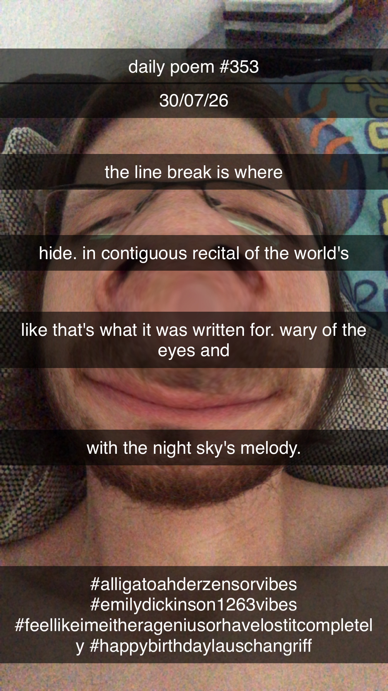

The Line Break
[353]The line break is where
hide. In contiguous recital of the world's
like that's what it was written for. Wary of the eyes and
with the night sky's melody.

The line break is where
hide. In contiguous recital of the world's
like that's what it was written for. Wary of the eyes and
with the night sky's melody.
